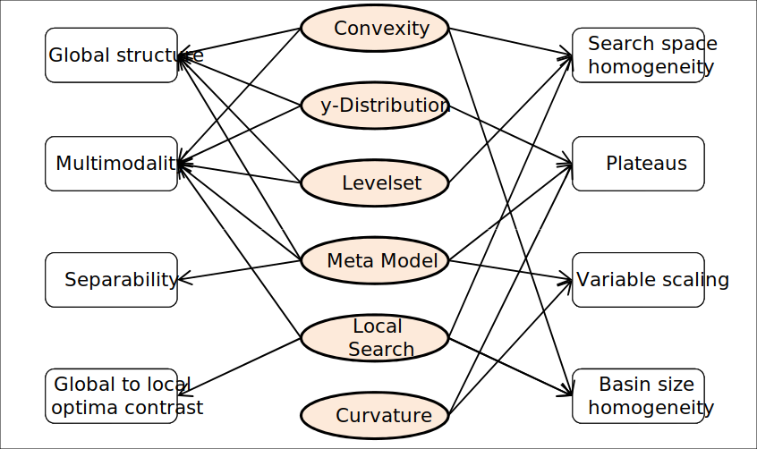

Classical ELA Features
The term Exploratory Landscape Analysis (ELA) features (as introduced by Mersmann et al., 2011) summarizes a group of characteristics, which quantifies certain properties of a continuous optimization problem. In its original version, ELA covered a total of 50 features - grouped into six so-called low-level properties (Convexity, Curvature, y-Distribution, Levelset, Local Search and Meta Model). These (numerical values) were used to characterize (usually categorical and expert-designed) high-level properties, such as the Global Structure, Multimodality or Variable Scaling. The figure below visualizes the connections between the low- and high-level properties.

(Taken from Kerschke, P. et al., 2014)
A detailed description of the features can be found in Mersmann et al. (2011).
Literature Reference
Kerschke, P., Preuss, M., Hernandez, C., Schuetze, O., Sun, J.-Q., Grimme, C., Rudolph, G., Bischl, B., and Trautmann, H. (2014): “Cell Mapping Techniques for Exploratory Landscape Analysis”, in: EVOLVE — A Bridge between Probability, Set Oriented Numbers, and Evolutionary Computation V, pp. 151—131, Springer (http://dx.doi.org/10.1007/978-3-319-07494-8_9).
Mersmann et al. (2011), “Exploratory Landscape Analysis”, in Proceedings of the 13th Annual Conference on Genetic and Evolutionary Computation, pp. 829—836. ACM (http://dx.doi.org/10.1145/2001576.2001690).